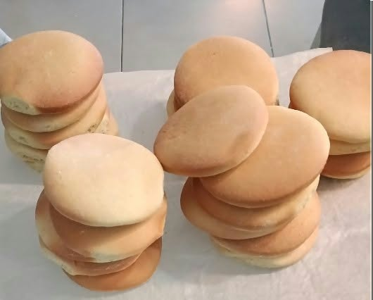
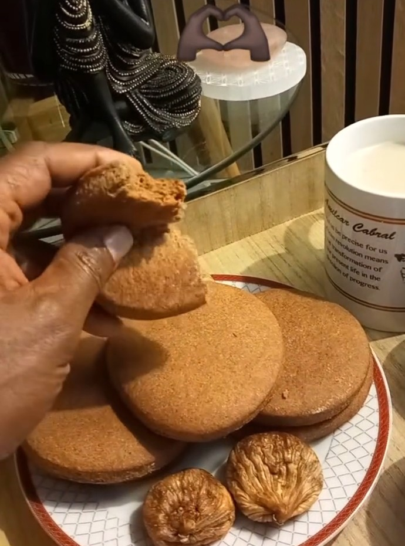
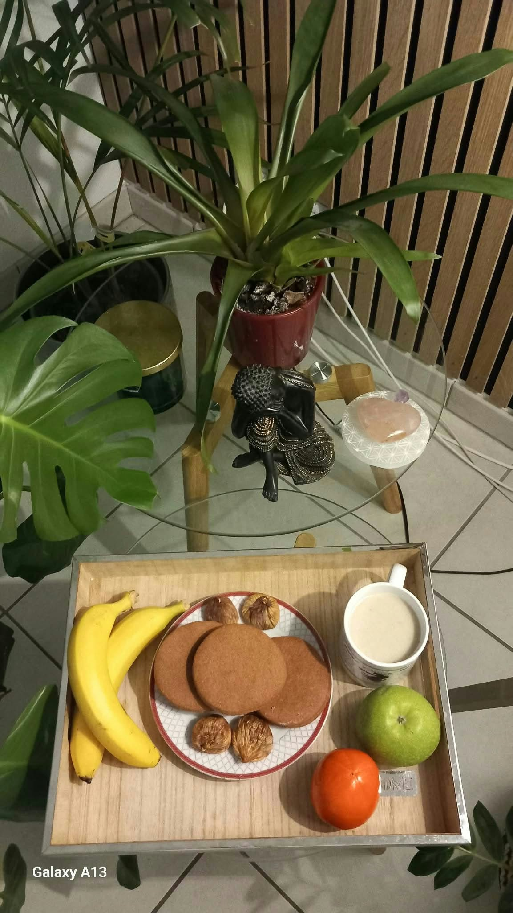

Monte a Sua Caixa Artesanal
Escolha uma caixa pré-selecionada ou misture livremente • 12 CHF por saco
⚡ Seleção Rápida de Degustação (1 Clique):
✨ Categoria 1 — Bolacha Normal Tradicional (NKA / Branca)
Farinha tradicional • Leite • Manteiga • Açúcar

Bolacha Branca NKA (Receita Clássica)
A verdadeira essência da infância nas ilhas. Textura delicada, amanteigada e levemente estaladiça que desmancha na boca ao primeiro toque.
12 CHF / saco artesanal
🌿 Categoria 2 — Bolacha Natural Especial da Casa (ÊTA / Preta)
Farinha de Espelta Pura • Tâmaras • Leite de Coco • Óleo de Coco (Sem Lactose & Sem Açúcar Refinado)




Bolacha Preta Natural ÊTA (Especialidade da Casa)
A obra-prima rústica da casa. Feita com farinha de espelta 100% pura, adoçada naturalmente com o melado das tâmaras e enriquecida com leite e óleo de coco fresco. Sem lactose e sem açúcar refinado.
12 CHF / saco artesanal
🛒 O Seu Panier (Seleção Discriminada para o Produtor)
0 sacosAinda não adicionou bolachas. Escolha acima entre Categoria 1 (Branca NKA) ou Categoria 2 (Preta Natural ÊTA).
Subtotal dos Produtos:
0 CHF
📦 Portes de envio na Suíça calculados no WhatsApp com o produtor conforme a morada exata.